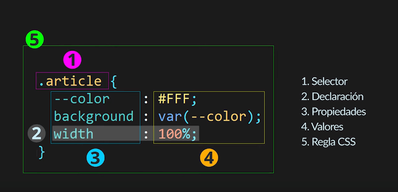

|  |
¿Qué es CSS?Es un lenguaje de estilos para las paginas web en la cual se configuran aspectos cosmeticos de la presentacion, con ella podemos definir colores, tipografias, formas, diseños y todos los demas aspectos visuales de las paginas web. Su acronimo CSS(Cascade StyleSheet) hace referencia a que este tipo de lenguaje funciona en forma de cascada, en terminos simples, los estilos se re-escribiran a medida que se encuentren mas arriba del archivo. Esto se habia diseñado con el fin de darle el poder al usuario para adaptar el uso de la pagina que visitaban. Este lenguaje tampoco es un lengiaje de programacion, sin embargo, llama la atencion el el modo por el cual se programa. Este funciona por medio de bloques llamdos reglas, luego definimos un selector y dentro de el establecemos las propiedades y los valoes correspondientes. |
||
|---|---|---|---|
Entonces, solo CSS sirve para poner bonita la pagina, ¿nada mas?Si y no. Con CSS tambien podemos hacer animaciones muy complejas e incluso con efectos en 3d. A pesar que no es un lenguaje de programacion, es curioso conocer que este lenguaje reconoce conceptos como variables, funciones, interaciones y condicionales. Por ejemplo, en las condicionales encontramos el caso de @media o @supports y en las funciones podemos ver rotate, scale o url. Finalmente, la version mas actual de CSS nos permite modificar imagenes de forma completa como recortar las imagenes, escalarlas, difuminarlas o cambiar el tono y/o contraste de estas imagenes. |